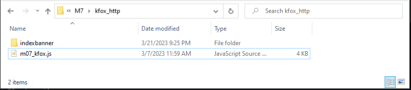
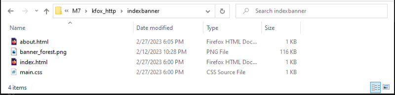
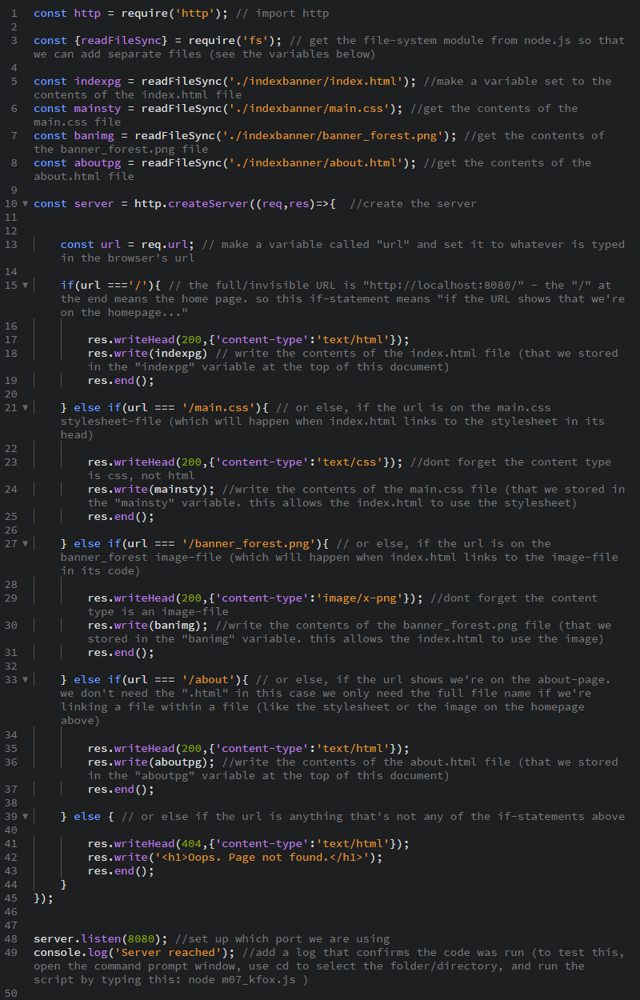
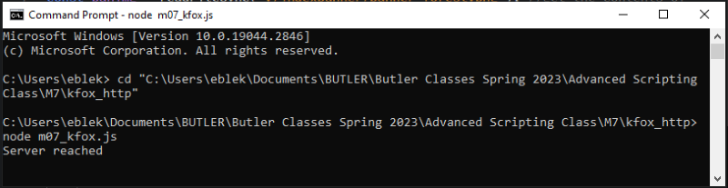
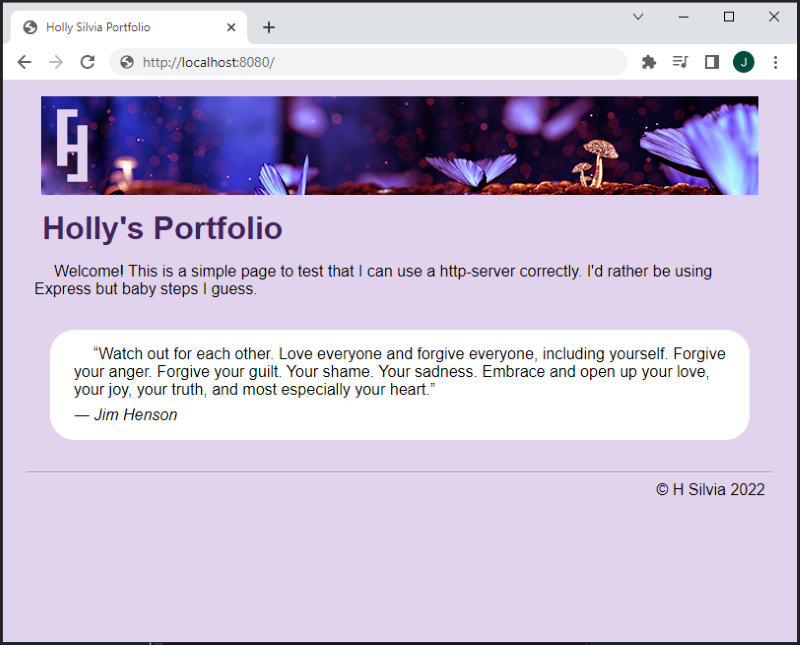
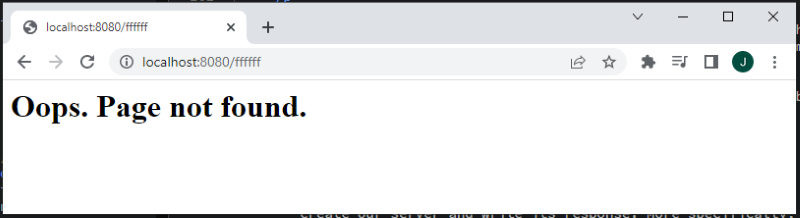

Scripting Exercise with Node.js HTTP Module & Local Server
In this unit, we learned how to use the built-in HTTP module in Node. This module allows us to use a javascript file to create a local server for testing. First, we would import the module like so:
const http = require('http');
Next, we make a function we called called "server" (or whatever name we decide) that uses the createServer method (which is available through the HTTP module).
const server = http.createServer((req,res)=>{
//Write the response here
});
The parameters "rec" and "res" could technically be called anything but it's general practice to name them as-is. This is because the first parameter is the request to the server, and the second one is the response (the data that the server sends back to the browser).
Writing the Response
For the Response in our "server" function above, we can write a message, insert code, or send files. For most of these, we would use the writeHead() method, which tells the browser what it's supposed to do with the following code. Below is the format of how to use writeHead()
res.writeHead(status code, { [, statusMessage] [, headers] );
The first argument, "status code" will most commonly be 200 (everything is okay) or 404 (file not found). There are many more codes that you can read about here. Optionally, you could give a human-readable statusMessage as the second argument. The last argument handles the header, telling the browser what kind of code it will display.
The examples below would set up a head with a status code of 200 and various content types:
res.writeHead(200,{'content-type':'text/html'}); //html code
res.writeHead(200,{'content-type':'text/css'}); //css code
res.writeHead(200,{'content-type':'image/x-png'}); //.png image file
res.writeHead(200,{'content-type':'text/plain'}); //string valueOnce we set up the head, we can use the write() method to actually write the content of our response. See the examples below:
response.write('This is a string.'); //write a string
response.write('<h1>Title</h1>); //write html codeWe can even write a document if we combine it with the file-system module. To do this, we would store the document in a constant before writing our "server" function, like so:
const homepage = readFileSync('index.html'); //stores the contents of "index.html" in a constant called "homepage"
Then within our response, we use the constant containing that document with the write() method as below:
res.write(homepage);
Once we've added our content, we need to end the response with the below code:
res.end();
Finally, we set up which port we will use for our browser access the server's response. For testing it is commonly set to 5000, but any number would work. In our exercise, we used 8080.
server.listen(8080);
Putting it All Together
We just covered a lot of different topics. Below, I am including an example of what the whole Javascript document would look like if we wanted to create a server that displays an html document as the response:
const http = require('http'); // import http module
const {readFileSync} = require('fs'); //import fs module
const MYhomepage = readFileSync('index.html');
const server = http.createServer((req,res)=>{
res.writeHead(200,{'content-type':'text/html'});
res.write(MYhomepage);
res.end();
});
server.listen(8080);
To start the server, we would open the command prompt console, change the directory to the folder containing the above javascript document, and then type "node fileName.js" (or whatever the name of the javascript document). Then we should be able to open any browser and type "localhost:8080" as the URL. If the server is working, the browser will show us the contents of index.html. To close the server, we can type CTRL+C in the console.M07 Exercise: HTTP Server Site
In this exercise, we put all the information above into practice. We used a Javascript document called "m07_kfox.js" to create our server and write its response. More specifically, we used if-else statements within the response so that multiple documents could be written depending on which URL is typed into the browser.
Also note that all of our site pages and files are saved in the "indexbanner" folder within the same directory as our m07_kfox.js file. For reference, the files and folders are shown below.
 This filepath can be seen in the code below when we create the constants that use readFileSync() for each file. The following image shows the contents of m07_kfox.js.
Once we use Node.js to run m07_kfox.js in the console, we get a console-log showing that our server is working.
Finally, we can test our server in the browser by entering "localhost:8080" as the url. We can even test our 404-page by adding a typo to the url.
 